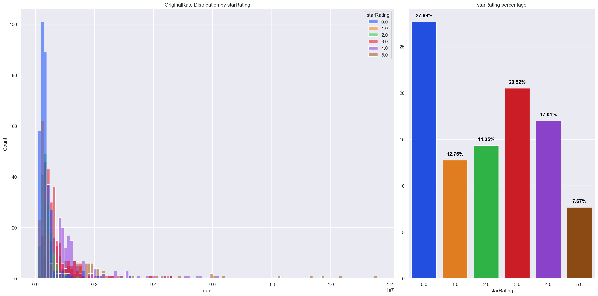

from sqlite3 import connect
import pickle
import pandas as pd
import json
import seaborn as sns
import matplotlib.pyplot as plt
from sklearn.preprocessing import MultiLabelBinarizer13 Project Regresi Hotel Yogyakarta
13.1 Deskripsi
Project ini merupakan contoh project Data Science yang menggunakan data hotel di Yogyakarta. Project ini bertujuan untuk memprediksi harga kamar hotel berdasarkan fitur-fitur yang ada. Project ini menggunakan 3 algoritma yaitu, XGBoost, Random Forest, dan SVM. Project ini juga menggunakan teknik hyperparameter tuning untuk meningkatkan performa model. Kemudian model tersebut dilakukan deployment menggunakan streamlit
13.2 Tentang data
Data ini diperoleh dengan teknik scrapping pada website Traveloka. Data ini berbentuk sqlite yang berisikan 2 tabel bernama hotel_yogyakarta dan hotel_room_yogyakarta
13.2.1 hotel_yogyakarta
Berikut detail column pada tabel hotel_yogyakarta. Dimensi (378, 12)
id: Unique id hoteltype: Tipe penginapanname: Nama hotelstarRating: Rating bintang hotelbuiltYear: Tahun dibuatnya hoteldescription: Deskripsi tentang hotellink: URL menuju halaman hotel di Travelokaaddress: Alamat hotelcity: Kota hotelimage: URL gambar hotelfacilities: Daftar fasilitas pada hotelnearestPointofInterests: Area populer / fasilitas umum disekitar hotel
13.2.2 hotel_room_yogyakarta
Berikut detail column pada tabel hotel_room_yogyakarta. Dimensi (1199, 16)
id: Unique id hotelhotelId: Id hotelroomType: Tipe kamar hoteldescription: deskripsi kamar hotelbedDescription: deskripsi kasur kamarsize: Ukuran kamar (\(m^2\))originalRate: Harga kamar per malambaseOccupancy: Kapasitas kamarmaxChildAge: Umur maksimal anak-anakmaxChildOccupancy: Kapasitas kamar untuk anak-anaknumExtraBeds: Jumlah kasur tambahanisBreakfastIncluded: Fasilitas sarapanisWifiIncluded: Fasilitas WiFiisRefundable: Fasilitas refundhasLivingRoom: Fasilitas ruang keluargafacilities: Daftar fasilitas lainnya pada kamar
13.3 Data analysis
13.3.1 Import library
13.3.2 Load data
Buat koneksi ke database sqlite, lalu baca tabel hotel_yogyakarta danhotel_room_yogyakarta menjadi dataframe pandas.
# SQLite3 connection
con = connect('./dataset/hotel-directories-ORI.sqlite3')
df_sql_hotel = pd.read_sql_query("SELECT * from hotel_yogyakarta", con=con)
df_sql_room = pd.read_sql_query("SELECT * from hotel_room_yogyakarta", con=con)
con.close()
# Table columns
print('Kolom Tabel Hotel :')
print(df_sql_hotel.columns)
print("Total Baris :", df_sql_hotel.shape[0])
print("Total Kolom :", df_sql_hotel.shape[1])
print('-' * 50)
print('Kolom Tabel Kamar:')
print(df_sql_room.columns)
print("Total Baris :", df_sql_room.shape[0])
print("Total Kolom :", df_sql_room.shape[1])Kolom Tabel Hotel :
Index(['id', 'type', 'name', 'starRating', 'builtYear', 'description', 'link',
'address', 'city', 'image', 'facilities', 'nearestPointOfInterests'],
dtype='object')
Total Baris : 378
Total Kolom : 12
--------------------------------------------------
Kolom Tabel Kamar:
Index(['id', 'hotelId', 'roomType', 'description', 'bedDescription', 'size',
'originalRate', 'baseOccupancy', 'maxChildAge', 'maxChildOccupancy',
'numExtraBeds', 'isBreakfastIncluded', 'isWifiIncluded', 'isRefundable',
'hasLivingRoom', 'facilities'],
dtype='object')
Total Baris : 1199
Total Kolom : 16Untuk melihat hasil dataframe dapat dilakukan menggunakan code berikut.
print(f"Dimensi : {df_sql_hotel.shape}")
df_sql_hotel.sample(2)Dimensi : (378, 12)| id | type | name | starRating | builtYear | description | link | address | city | image | facilities | nearestPointOfInterests | |
|---|---|---|---|---|---|---|---|---|---|---|---|---|
| 195 | 3000010034920 | Hotel | Hotel Cahaya Kasih | 0.0 | 1996 | <p><b>Lokasi</b><br>Hotel Cahaya Kasih adalah ... | https://www.traveloka.com/id-id/hotel/detail?s... | Jalan Malioboro, Sosromenduran GT.I/280, Jalan... | Yogyakarta | https://ik.imagekit.io/tvlk/apr-asset/dgXfoyh2... | ["WIFI_PUBLIC_AREA","WIFI_FREE","AIR_CONDITION... | [{"landmarkId":"91516349005487","geoId":null,"... |
| 28 | 3000010014429 | Hotel | Lafayette Boutique Hotel | 5.0 | 2015 | <p><b>Lokasi</b><br>Lafayette Boutique Hotel b... | https://www.traveloka.com/id-id/hotel/detail?s... | Jalan Ring Road Utara, No 409, Manggung, Catur... | Yogyakarta | https://ik.imagekit.io/tvlk/apr-asset/dgXfoyh2... | ["CARPARK","ELEVATOR","LATE_CHECKOUT","RESTAUR... | [{"landmarkId":"91607407537252","geoId":null,"... |
print(f"Dimensi : {df_sql_room.shape}")
df_sql_room.sample(2)Dimensi : (1199, 16)| id | hotelId | roomType | description | bedDescription | size | originalRate | baseOccupancy | maxChildAge | maxChildOccupancy | numExtraBeds | isBreakfastIncluded | isWifiIncluded | isRefundable | hasLivingRoom | facilities | |
|---|---|---|---|---|---|---|---|---|---|---|---|---|---|---|---|---|
| 1146 | 1000110288 | 3000020012907 | Family | None | None | 35.0 | {"amount":"371901","currency":"IDR","tax":"780... | 4 | 10 | 0 | 0 | 1 | 1 | 0 | 0 | ["AIR_CONDITIONING","COMPLIMENTARY_BOTTLED_WAT... |
| 442 | 1000128391 | 3000010004867 | Suite Twin | <p>Suite Room Twin Beds</p> | None | 35.0 | {"amount":"583227","currency":"IDR","tax":"122... | 2 | 8 | 1 | 0 | 0 | 1 | 1 | 0 | ["AIR_CONDITIONING","BATHROBES","BLACKOUT_DRAP... |
# Fungsi menghitung unique value
def check_unique(df):
count = 0
for i in df.columns:
if df[i].nunique() == 1:
count += 1
print(f'{i}: {df[i].nunique()}')
else:
print(f'{i}: {df[i].nunique()}')
if count == 0:
print('No columns with only one unique value')Gunakan fungsi check_unique() untuk mengecek apakah terdapat data dengan unique value kurang dari 2. Jika ada, maka data tersebut tidak akan digunakan.
check_unique(df_sql_hotel)id: 378
type: 1
name: 377
starRating: 8
builtYear: 38
description: 378
link: 378
address: 377
city: 1
image: 377
facilities: 372
nearestPointOfInterests: 375check_unique(df_sql_room)id: 1199
hotelId: 375
roomType: 423
description: 544
bedDescription: 0
size: 87
originalRate: 714
baseOccupancy: 9
maxChildAge: 13
maxChildOccupancy: 5
numExtraBeds: 1
isBreakfastIncluded: 2
isWifiIncluded: 2
isRefundable: 2
hasLivingRoom: 2
facilities: 600- Nilai penghubung kedua tabel adalah
idpada data hotel danhotelIdpada data kamar. - Terdapat beberapa beberapa kolom yang tidak digunakan pada analisis ini
- Hotel:
name,description,link,address, danimage. - Kamar:
id,roomType,description, danbedDescription.
- Hotel:
- Terdapat beberapa kolom dengan total nilai unik kurang dari 2
- Hotel:
typedancity. - Kamar:
bedDescriptiondannumExtraBeds
- Hotel:
- Setelah dilakukan penghapusan kolom selanjutnya tabel akan di-merge menjadi satu dataframe.
starRatingmemiliki 8 nilai unik, perlu di teliti lebih lanjut untuk detailnya.
13.3.3 Menghapus Kolom
hotelDrop = ['name', 'description', 'link', 'address', 'image', 'type', 'city']
roomDrop = ['id', 'roomType', 'description', 'bedDescription', 'numExtraBeds']
df_hotel = df_sql_hotel.drop(hotelDrop, axis=1)
df_room = df_sql_room.drop(roomDrop, axis=1)
print('Total Hotel Table Data : ', df_hotel.shape[0])
print('Total Hotel Table Column : ', df_hotel.shape[1])
print('-' * 30)
print('Total Room Table Data : ', df_room.shape[0])
print('Total Room Table Column : ', df_room.shape[1])Total Hotel Table Data : 378
Total Hotel Table Column : 5
------------------------------
Total Room Table Data : 1199
Total Room Table Column : 1113.3.4 Merge Data
# Rename column
df_hotel.rename(columns={'id': 'hotelId'}, inplace=True)
df_hotel.rename(columns={'facilities': 'hotelFacilities'}, inplace=True)
df_room.rename(columns={'facilities': 'roomFacilities'}, inplace=True)- Menyamakan nama
idpada tabel hotel danhotelIdpada tabel kamar. - Menambah prefix
hoteldanroompada tiap kolomfacilitiesmasing-masing tabel.
# merge hotel dan room data
df = pd.merge(df_hotel, df_room, on='hotelId', how='inner')
# remove id column
df.drop(columns=['hotelId'], inplace=True)
# re arrange column
df = df[['originalRate', 'starRating', 'builtYear', 'size', 'baseOccupancy', 'maxChildAge',
'maxChildOccupancy', 'isBreakfastIncluded', 'isWifiIncluded', 'isRefundable',
'hasLivingRoom', 'hotelFacilities', 'roomFacilities', 'nearestPointOfInterests']]
df| originalRate | starRating | builtYear | size | baseOccupancy | maxChildAge | maxChildOccupancy | isBreakfastIncluded | isWifiIncluded | isRefundable | hasLivingRoom | hotelFacilities | roomFacilities | nearestPointOfInterests | |
|---|---|---|---|---|---|---|---|---|---|---|---|---|---|---|
| 0 | {"amount":"1008264","currency":"IDR","tax":"21... | 5.0 | 2013 | 40.0 | 2 | 8 | 1 | 1 | 1 | 0 | 0 | ["CARPARK","COFFEE_SHOP","ELEVATOR","RESTAURAN... | ["AIR_CONDITIONING","BALCONY_TERRACE","BATHROB... | [{"landmarkId":"900000001343","geoId":null,"na... |
| 1 | {"amount":"1049587","currency":"IDR","tax":"22... | 5.0 | 2013 | 40.0 | 2 | 8 | 1 | 1 | 1 | 0 | 0 | ["CARPARK","COFFEE_SHOP","ELEVATOR","RESTAURAN... | ["AIR_CONDITIONING","BALCONY_TERRACE","BATHROB... | [{"landmarkId":"900000001343","geoId":null,"na... |
| 2 | {"amount":"1049587","currency":"IDR","tax":"22... | 5.0 | 2013 | 40.0 | 2 | 8 | 1 | 1 | 1 | 0 | 0 | ["CARPARK","COFFEE_SHOP","ELEVATOR","RESTAURAN... | ["AIR_CONDITIONING","BALCONY_TERRACE","BATHROB... | [{"landmarkId":"900000001343","geoId":null,"na... |
| 3 | {"amount":"1842975","currency":"IDR","tax":"38... | 5.0 | 2013 | 60.0 | 2 | 8 | 0 | 1 | 1 | 0 | 0 | ["CARPARK","COFFEE_SHOP","ELEVATOR","RESTAURAN... | ["AIR_CONDITIONING","BALCONY_TERRACE","BATHROB... | [{"landmarkId":"900000001343","geoId":null,"na... |
| 4 | {"amount":"2396694","currency":"IDR","tax":"50... | 5.0 | 2013 | 80.0 | 2 | 8 | 0 | 1 | 1 | 0 | 0 | ["CARPARK","COFFEE_SHOP","ELEVATOR","RESTAURAN... | ["AIR_CONDITIONING","BALCONY_TERRACE","BATHROB... | [{"landmarkId":"900000001343","geoId":null,"na... |
| ... | ... | ... | ... | ... | ... | ... | ... | ... | ... | ... | ... | ... | ... | ... |
| 1194 | {"amount":"308540","currency":"IDR","tax":"647... | 1.0 | None | 15.0 | 2 | 12 | 1 | 0 | 1 | 0 | 0 | ["CARPARK","WIFI_PUBLIC_AREA","LAN_INTERNET_AC... | ["AIR_CONDITIONING","DESK","SHOWER","TELEVISION"] | [{"landmarkId":"900000001117","geoId":null,"na... |
| 1195 | {"amount":"220385","currency":"IDR","tax":"462... | 1.0 | None | 16.0 | 2 | 12 | 1 | 0 | 1 | 0 | 0 | ["CARPARK","WIFI_PUBLIC_AREA","LAN_INTERNET_AC... | ["AIR_CONDITIONING","DESK","SHOWER","TELEVISION"] | [{"landmarkId":"900000001117","geoId":null,"na... |
| 1196 | {"amount":"296425","currency":"IDR","tax":"622... | 2.0 | 2013 | 25.0 | 2 | 10 | 1 | 0 | 1 | 1 | 0 | ["CARPARK","COFFEE_OR_TEA_IN_LOBBY","SAFETY_DE... | ["AIR_CONDITIONING","BALCONY_TERRACE","COFFEE_... | [{"landmarkId":"91607407537252","geoId":null,"... |
| 1197 | {"amount":"994485","currency":"IDR","tax":"208... | 2.0 | 2013 | 60.0 | 6 | 10 | 1 | 0 | 1 | 1 | 0 | ["CARPARK","COFFEE_OR_TEA_IN_LOBBY","SAFETY_DE... | ["AIR_CONDITIONING","BALCONY_TERRACE","COFFEE_... | [{"landmarkId":"91607407537252","geoId":null,"... |
| 1198 | {"amount":"220385","currency":"IDR","tax":"462... | 0.0 | None | 16.0 | 2 | 12 | 1 | 0 | 1 | 0 | 0 | ["CARPARK","HAS_24_HOUR_ROOM_SERVICE","ROOM_SE... | ["AIR_CONDITIONING","NON_SMOKING_ROOMS","SEATI... | [{"landmarkId":"900000001117","geoId":null,"na... |
1199 rows × 14 columns
- Dimensi pasca penggabungan adalah
(1199, 14) - Menghapus kolom
hotelIdkarena sudah tidak diperlukan lagi. - Mengubah urutan kolom untuk mempermudah analisis, target kolom berada di kiri dan kolom array berada di kanan.
13.3.5 Target Processing
for i in range(0, 5):
print(df.loc[i, 'originalRate']){"amount":"1008264","currency":"IDR","tax":"211736"}
{"amount":"1049587","currency":"IDR","tax":"220413"}
{"amount":"1049587","currency":"IDR","tax":"220413"}
{"amount":"1842975","currency":"IDR","tax":"387025"}
{"amount":"2396694","currency":"IDR","tax":"503306"}- Data berbentuk
JSONatauDictionary, maka perlu diubah menjadi nilai harga dengan 1 nilai. - Karena semua data menggunakan matauang
IDR, makacurrencytidak diperlukan.
# Extract the amount from originalRate using a lambda function
df['rate'] = df['originalRate'].apply(lambda x: json.loads(x)['amount'])
df['tax'] = df['originalRate'].apply(lambda x: json.loads(x)['tax'])
df = df.drop(columns=['originalRate'])# check tipe data
print('Tipe data harga :', df['rate'].dtype)
print('Tipe data pajak :', df['tax'].dtype)Tipe data harga : object
Tipe data pajak : object# ubah tipe data
df['rate'] = df['rate'].astype('int')
df['tax'] = df['tax'].astype('int')
print('Tipe data harga :', df['rate'].dtype)
print('Tipe data pajak :', df['tax'].dtype)Tipe data harga : int32
Tipe data pajak : int3213.3.5.1 Rasio Pajak
Tahap ini bertujuan untuk mengetahui rasio pajak dari harga kamar hotel. Rasio pajak ini akan digunakan untuk menghitung harga kamar hotel setelah dikenakan pajak.
# create series for original rate
original_rate = df['rate']
# create series for tax
tax = df['tax']
# create dataframe for original rate, tax, and tax rate
df_rate = pd.DataFrame({'original_rate': original_rate, 'tax': tax})
df_rate['tax_rate'] = df_rate['tax'] / df_rate['original_rate'] * 100
df_rate| original_rate | tax | tax_rate | |
|---|---|---|---|
| 0 | 1008264 | 211736 | 21.000056 |
| 1 | 1049587 | 220413 | 20.999974 |
| 2 | 1049587 | 220413 | 20.999974 |
| 3 | 1842975 | 387025 | 21.000014 |
| 4 | 2396694 | 503306 | 21.000011 |
| ... | ... | ... | ... |
| 1194 | 308540 | 64793 | 20.999870 |
| 1195 | 220385 | 46282 | 21.000522 |
| 1196 | 296425 | 62249 | 20.999916 |
| 1197 | 994485 | 208842 | 21.000015 |
| 1198 | 220385 | 46282 | 21.000522 |
1199 rows × 3 columns
# count number of data with tax rate 20% and under 21%, also over 21%
count0 = 0
count_20 = 0
countBetween = 0
for i in range(len(df_rate['tax_rate'])):
if df_rate['tax_rate'][i] < 20 and df_rate['tax_rate'][i] > 0:
countBetween += 1
elif df_rate['tax_rate'][i] >= 20:
count_20 += 1
elif df_rate['tax_rate'][i] == 0:
count0 += 1
print('Median pajak : ', df_rate['tax_rate'].median())
print('null / 0% pajak: ', count0)
print('Pajak diantara 0 - 20%:', countBetween)
print('Rasio pajak diatas 20% :', count_20)
# plot for tax rate and give the total value on the top of the bar if the value is 0% it will not show
sns.set(rc={'figure.figsize': (10, 7)})
sns.set_style('darkgrid')
ax = sns.histplot(df_rate['tax_rate'], kde=False, color='dodgerblue', bins=9)
ax.set(xlabel='Tax Rate (%)', ylabel='Count')
ax.set_title('Tax Rate Distribution')
total = len(df_rate['tax_rate'])
for p in ax.patches:
height = p.get_height()
if height != 0:
ax.text(p.get_x()+p.get_width()/2.,
height + 15,
'{:1.2f}%'.format(100*height/total),
ha="center")
plt.show()Median pajak : 20.99999233666715
null / 0% pajak: 63
Pajak diantara 0 - 20%: 8
Rasio pajak diatas 20% : 1128# Menghapus kolom pajak
df = df.drop(columns=['tax'])
# Mengubah target kolom menjadi di awal
# sekedar untuk merapikan dataframe
df = df[['rate'] + [col for col in df.columns if col != 'rate']]
df.columnsIndex(['rate', 'starRating', 'builtYear', 'size', 'baseOccupancy',
'maxChildAge', 'maxChildOccupancy', 'isBreakfastIncluded',
'isWifiIncluded', 'isRefundable', 'hasLivingRoom', 'hotelFacilities',
'roomFacilities', 'nearestPointOfInterests'],
dtype='object')- Pajak hotel di Yogyakarta ada di kisaran
20-22%dengan median21% - Karena
94%data memiliki pajak dikisaran tersebut maka nilai pajak dianggap 21%(median) secara keseluruhan.
13.3.6 Validaasi Data
13.3.6.1 Pengecekan Rating Bintang
# starRating Distribution
value = df.starRating.value_counts()
print('OriginalRate Distribution by starRating')
print(value)
# starRating Distribution by percentage
value_percentage = value / len(df) * 100
# create a list of tuples where each tuple contains the value and index of each element in the value_percentage series
value_percentage_list = [(value_percentage[i], i)
for i in value_percentage.index]
# sort the list by the value in descending order
value_percentage_list_sorted = sorted(value_percentage_list, reverse=True)
fig, ax = plt.subplots(1, 2, figsize=(20, 10), dpi=80,
gridspec_kw={'width_ratios': [1, 0.5]})
sns.histplot(df, x="rate", hue='starRating', palette='bright',
ax=ax[0]).set(title='OriginalRate Distribution by starRating')
# starRating percentage plot
sns.barplot(x=value_percentage.index, y=value_percentage.values,
palette='bright', ax=ax[1]).set(title='starRating percentage')
# add the percentage text using the sorted list
for container in ax[1].containers:
for bar in container.patches:
v = bar.get_height()
bar_center = bar.get_x() + bar.get_width() / 2
ax[1].text(bar_center, v + 0.5,
f'{v:.2f}%', color='black', fontweight='bold', ha='center')
fig.tight_layout()OriginalRate Distribution by starRating
starRating
0.0 332
3.0 240
4.0 204
2.0 160
1.0 153
5.0 92
2.5 12
3.5 6
Name: count, dtype: int64- Rating bintang memiliki beberapa nilai dengan 0.5 (desimal), tetapi nilai tersebut hanya memiliki persentase jumlah data yang sedikit, maka dari itu rating tersebut dihilangkan angka desimalnya dari rating seharusnya.
# ubah starRating dengan angka bulat
df['starRating'] = df['starRating'].replace(2.5, 2)
df['starRating'] = df['starRating'].replace(3.5, 3)# starRating Distribution
value = df.starRating.value_counts()
print('OriginalRate Distribution by starRating')
print(value)
# starRating Distribution by percentage
value_percentage = value / len(df) * 100
# create a list of tuples where each tuple contains the value and index of each element in the value_percentage series
value_percentage_list = [(value_percentage[i], i)
for i in value_percentage.index]
# sort the list by the value in descending order
value_percentage_list_sorted = sorted(value_percentage_list, reverse=True)
fig, ax = plt.subplots(1, 2, figsize=(20, 10), dpi=80,
gridspec_kw={'width_ratios': [1, 0.5]})
sns.histplot(df, x="rate", hue='starRating', palette='bright',
ax=ax[0]).set(title='OriginalRate Distribution by starRating')
# starRating percentage plot
sns.barplot(x=value_percentage.index, y=value_percentage.values,
palette='bright', ax=ax[1]).set(title='starRating percentage')
# add the percentage text using the sorted list
for container in ax[1].containers:
for bar in container.patches:
v = bar.get_height()
bar_center = bar.get_x() + bar.get_width() / 2
ax[1].text(bar_center, v + 0.5,
f'{v:.2f}%', color='black', fontweight='bold', ha='center')
fig.tight_layout()OriginalRate Distribution by starRating
starRating
0.0 332
3.0 246
4.0 204
2.0 172
1.0 153
5.0 92
Name: count, dtype: int64
- Persentase persebaran data tiap rating bintang sudah lebih baik setelah dilakukan pengubahan nilai rating bintang.
- Terlihat pada plot yang
kiribahwa terdapat ekor yang sangat panjang, ini menunjukkan adanya outlier pada kolom harga(rate)
df.info()<class 'pandas.core.frame.DataFrame'>
RangeIndex: 1199 entries, 0 to 1198
Data columns (total 14 columns):
# Column Non-Null Count Dtype
--- ------ -------------- -----
0 rate 1199 non-null int32
1 starRating 1199 non-null float64
2 builtYear 878 non-null object
3 size 1064 non-null object
4 baseOccupancy 1199 non-null int64
5 maxChildAge 1199 non-null int64
6 maxChildOccupancy 1199 non-null int64
7 isBreakfastIncluded 1199 non-null int64
8 isWifiIncluded 1199 non-null int64
9 isRefundable 1199 non-null int64
10 hasLivingRoom 1199 non-null int64
11 hotelFacilities 1199 non-null object
12 roomFacilities 1199 non-null object
13 nearestPointOfInterests 1199 non-null object
dtypes: float64(1), int32(1), int64(7), object(5)
memory usage: 126.6+ KB- Kolom
starRatingmasih bertipe datafloatwalau sudah tidak memiliki angka desimal, maka perlu akan menjadiint - Kolom
builtYearharus diganti ke tipe dataint - Kolom
sizeharus diganti ke tipe datafloat(tipe data dasar dari tabel sqlite adalahfloat) - Terdapat nilai
nullpada kolombuiltYeardansizeyang harus ditangani
df['starRating'] = df['starRating'].astype('int')
print('Tipe data starRating :', df['starRating'].dtype)Tipe data starRating : int3213.3.6.2 Data Cleaning
13.3.6.2.1 Check Duplicate Data
# show index who has duplicate value
print('Total duplicated row = ', df.duplicated().sum())
# print duplicated data list index 1
df[df.duplicated(keep=False)]Total duplicated row = 89| rate | starRating | builtYear | size | baseOccupancy | maxChildAge | maxChildOccupancy | isBreakfastIncluded | isWifiIncluded | isRefundable | hasLivingRoom | hotelFacilities | roomFacilities | nearestPointOfInterests | |
|---|---|---|---|---|---|---|---|---|---|---|---|---|---|---|
| 1 | 1049587 | 5 | 2013 | 40.0 | 2 | 8 | 1 | 1 | 1 | 0 | 0 | ["CARPARK","COFFEE_SHOP","ELEVATOR","RESTAURAN... | ["AIR_CONDITIONING","BALCONY_TERRACE","BATHROB... | [{"landmarkId":"900000001343","geoId":null,"na... |
| 2 | 1049587 | 5 | 2013 | 40.0 | 2 | 8 | 1 | 1 | 1 | 0 | 0 | ["CARPARK","COFFEE_SHOP","ELEVATOR","RESTAURAN... | ["AIR_CONDITIONING","BALCONY_TERRACE","BATHROB... | [{"landmarkId":"900000001343","geoId":null,"na... |
| 6 | 6000000 | 5 | 2012 | 105.0 | 2 | 6 | 2 | 1 | 1 | 1 | 0 | ["CARPARK","COFFEE_SHOP","ELEVATOR","RESTAURAN... | ["AIR_CONDITIONING","BATHROBES","BATHTUB","COF... | [{"landmarkId":"91607408097208","geoId":null,"... |
| 7 | 6000000 | 5 | 2012 | 105.0 | 2 | 6 | 2 | 1 | 1 | 1 | 0 | ["CARPARK","COFFEE_SHOP","ELEVATOR","RESTAURAN... | ["AIR_CONDITIONING","BATHROBES","BATHTUB","COF... | [{"landmarkId":"91607408097208","geoId":null,"... |
| 8 | 1933333 | 5 | 2012 | 40.0 | 2 | 6 | 2 | 1 | 1 | 1 | 0 | ["CARPARK","COFFEE_SHOP","ELEVATOR","RESTAURAN... | ["AIR_CONDITIONING","BATHROBES","COMPLIMENTARY... | [{"landmarkId":"91607408097208","geoId":null,"... |
| ... | ... | ... | ... | ... | ... | ... | ... | ... | ... | ... | ... | ... | ... | ... |
| 1169 | 141273 | 0 | None | None | 2 | 5 | 0 | 0 | 0 | 1 | 0 | ["HAS_24_HOUR_FRONT_DESK"] | [] | [{"landmarkId":"91607407537252","geoId":null,"... |
| 1173 | 550964 | 0 | None | None | 2 | 5 | 0 | 0 | 0 | 1 | 0 | [] | [] | [{"landmarkId":"91607407802715","geoId":null,"... |
| 1174 | 550964 | 0 | None | None | 2 | 5 | 0 | 0 | 0 | 1 | 0 | [] | [] | [{"landmarkId":"91607407802715","geoId":null,"... |
| 1189 | 413223 | 1 | None | 9.0 | 2 | 10 | 0 | 0 | 1 | 1 | 0 | ["WIFI_PUBLIC_AREA","ACCESS_FRIENDLY","ACCESSI... | ["AIR_CONDITIONING","DESK","NON_SMOKING_ROOMS"... | [{"landmarkId":"91607407537252","geoId":null,"... |
| 1190 | 413223 | 1 | None | 9.0 | 2 | 10 | 0 | 0 | 1 | 1 | 0 | ["WIFI_PUBLIC_AREA","ACCESS_FRIENDLY","ACCESSI... | ["AIR_CONDITIONING","DESK","NON_SMOKING_ROOMS"... | [{"landmarkId":"91607407537252","geoId":null,"... |
177 rows × 14 columns
# drop duplicate data
df = df.drop_duplicates(keep='first')
df.shape(1110, 14)- Dengan menggunakan parameter
keep = 'first'maka data yang duplikat akan dihapus kecuali data pertama yang muncul.
13.3.6.2.2 Check Null
# Jumlah baris data
jumlah_baris_ori = df.shape[0]
# crate dataframe for null value
df_null = pd.DataFrame(df.isnull().sum(), columns=['null_value'])
df_null['null_value_percentage'] = df_null['null_value'] / len(df) * 100
df_null| null_value | null_value_percentage | |
|---|---|---|
| rate | 0 | 0.000000 |
| starRating | 0 | 0.000000 |
| builtYear | 305 | 27.477477 |
| size | 121 | 10.900901 |
| baseOccupancy | 0 | 0.000000 |
| maxChildAge | 0 | 0.000000 |
| maxChildOccupancy | 0 | 0.000000 |
| isBreakfastIncluded | 0 | 0.000000 |
| isWifiIncluded | 0 | 0.000000 |
| isRefundable | 0 | 0.000000 |
| hasLivingRoom | 0 | 0.000000 |
| hotelFacilities | 0 | 0.000000 |
| roomFacilities | 0 | 0.000000 |
| nearestPointOfInterests | 0 | 0.000000 |
- Terdapat 2 data yang memiliki nilai
nulldengan persentase yang cukup tinggi, yaitu kolombuiltYeardansize. Oleh karena itu data tersebut akan diubah dengan nilai median per rating hotel.
# create new dataframe for null value rows
df_null_rows = df[df.isnull().any(axis=1)]
df_null_rows| rate | starRating | builtYear | size | baseOccupancy | maxChildAge | maxChildOccupancy | isBreakfastIncluded | isWifiIncluded | isRefundable | hasLivingRoom | hotelFacilities | roomFacilities | nearestPointOfInterests | |
|---|---|---|---|---|---|---|---|---|---|---|---|---|---|---|
| 41 | 716253 | 4 | None | 28.0 | 2 | 5 | 0 | 0 | 1 | 0 | 0 | ["COFFEE_SHOP","ELEVATOR","RESTAURANT_FOR_BREA... | ["AIR_CONDITIONING","BLACKOUT_DRAPES_CURTAINS"... | [{"landmarkId":"91510822038476","geoId":null,"... |
| 42 | 826447 | 4 | None | 28.0 | 2 | 5 | 0 | 0 | 1 | 0 | 0 | ["COFFEE_SHOP","ELEVATOR","RESTAURANT_FOR_BREA... | ["AIR_CONDITIONING","BLACKOUT_DRAPES_CURTAINS"... | [{"landmarkId":"91510822038476","geoId":null,"... |
| 43 | 936639 | 4 | None | 35.0 | 2 | 5 | 0 | 0 | 1 | 0 | 0 | ["COFFEE_SHOP","ELEVATOR","RESTAURANT_FOR_BREA... | ["AIR_CONDITIONING","BLACKOUT_DRAPES_CURTAINS"... | [{"landmarkId":"91510822038476","geoId":null,"... |
| 44 | 1212121 | 4 | None | 28.0 | 2 | 5 | 0 | 0 | 1 | 0 | 0 | ["COFFEE_SHOP","ELEVATOR","RESTAURANT_FOR_BREA... | ["AIR_CONDITIONING","BLACKOUT_DRAPES_CURTAINS"... | [{"landmarkId":"91510822038476","geoId":null,"... |
| 60 | 846281 | 4 | 2018 | None | 1 | 0 | 0 | 0 | 1 | 0 | 0 | ["CARPARK","ELEVATOR","HAS_24_HOUR_ROOM_SERVIC... | ["TOWELS_PROVIDED","NON_SMOKING_ROOMS","LINENS... | [{"landmarkId":"91575379594159","geoId":null,"... |
| ... | ... | ... | ... | ... | ... | ... | ... | ... | ... | ... | ... | ... | ... | ... |
| 1192 | 187328 | 1 | None | 12.0 | 2 | 12 | 1 | 0 | 1 | 0 | 0 | ["CARPARK","WIFI_PUBLIC_AREA","LAN_INTERNET_AC... | ["DESK","FAN","PRIVATE_BATHROOM","TELEVISION"] | [{"landmarkId":"900000001117","geoId":null,"na... |
| 1193 | 440772 | 1 | None | 28.0 | 4 | 12 | 2 | 0 | 1 | 0 | 0 | ["CARPARK","WIFI_PUBLIC_AREA","LAN_INTERNET_AC... | ["AIR_CONDITIONING","BATHTUB","DESK","TELEVISI... | [{"landmarkId":"900000001117","geoId":null,"na... |
| 1194 | 308540 | 1 | None | 15.0 | 2 | 12 | 1 | 0 | 1 | 0 | 0 | ["CARPARK","WIFI_PUBLIC_AREA","LAN_INTERNET_AC... | ["AIR_CONDITIONING","DESK","SHOWER","TELEVISION"] | [{"landmarkId":"900000001117","geoId":null,"na... |
| 1195 | 220385 | 1 | None | 16.0 | 2 | 12 | 1 | 0 | 1 | 0 | 0 | ["CARPARK","WIFI_PUBLIC_AREA","LAN_INTERNET_AC... | ["AIR_CONDITIONING","DESK","SHOWER","TELEVISION"] | [{"landmarkId":"900000001117","geoId":null,"na... |
| 1198 | 220385 | 0 | None | 16.0 | 2 | 12 | 1 | 0 | 1 | 0 | 0 | ["CARPARK","HAS_24_HOUR_ROOM_SERVICE","ROOM_SE... | ["AIR_CONDITIONING","NON_SMOKING_ROOMS","SEATI... | [{"landmarkId":"900000001117","geoId":null,"na... |
378 rows × 14 columns
# ubah sementara null value menjadi 0
df['builtYear'] = df['builtYear'].fillna(0)
df['size'] = df['size'].fillna(0)
# ubah tipe data
df['builtYear'] = df['builtYear'].astype('int32')
df['size'] = df['size'].astype('float')
print('Tipe data builtYear :', df['builtYear'].dtype)
print('Tipe data size :', df['size'].dtype)Tipe data builtYear : int32
Tipe data size : float64
Note
Kolom yang memiliki nilai null akan membuat tipe data menjadi object, maka dari itu pada penelitian ini akan diisi dengan nilai 0 terlebih dahulu, kemudian kolom tersebut diubah tipe datanya
# ubah nilai 0 pada kolom builtYear menjadi median tiap starRating
for i in df['starRating'].unique():
df.loc[(df['starRating'] == i) & (df['builtYear'] == 0),
'builtYear'] = df[df['starRating'] == i]['builtYear'].median()
# ubah nilai 0 pada kolom size menjadi median tiap starRating
for i in df['starRating'].unique():
df.loc[(df['starRating'] == i) & (df['size'] == 0),
'size'] = df[df['starRating'] == i]['size'].median()
# crate dataframe for null value
df_null = pd.DataFrame(df.isnull().sum(), columns=['null_value'])
df_null['null_value_percentage'] = df_null['null_value'] / len(df) * 100
df_null| null_value | null_value_percentage | |
|---|---|---|
| rate | 0 | 0.0 |
| starRating | 0 | 0.0 |
| builtYear | 0 | 0.0 |
| size | 0 | 0.0 |
| baseOccupancy | 0 | 0.0 |
| maxChildAge | 0 | 0.0 |
| maxChildOccupancy | 0 | 0.0 |
| isBreakfastIncluded | 0 | 0.0 |
| isWifiIncluded | 0 | 0.0 |
| isRefundable | 0 | 0.0 |
| hasLivingRoom | 0 | 0.0 |
| hotelFacilities | 0 | 0.0 |
| roomFacilities | 0 | 0.0 |
| nearestPointOfInterests | 0 | 0.0 |
- Data sudah tidak memiliki nilai
null
13.3.6.3 Statistik Deskriptif
df.describe()| rate | starRating | builtYear | size | baseOccupancy | maxChildAge | maxChildOccupancy | isBreakfastIncluded | isWifiIncluded | isRefundable | hasLivingRoom | |
|---|---|---|---|---|---|---|---|---|---|---|---|
| count | 1.110000e+03 | 1110.000000 | 1110.000000 | 1110.000000 | 1110.000000 | 1110.000000 | 1110.000000 | 1110.000000 | 1110.000000 | 1110.000000 | 1110.000000 |
| mean | 7.118771e+05 | 2.042342 | 1993.248649 | 25.430982 | 2.080180 | 6.528829 | 0.747748 | 0.322523 | 0.896396 | 0.457658 | 0.020721 |
| std | 9.971952e+05 | 1.643362 | 122.853595 | 20.378749 | 0.804554 | 3.013432 | 0.570834 | 0.467652 | 0.304883 | 0.498428 | 0.142512 |
| min | 8.264500e+04 | 0.000000 | 1.000000 | 3.000000 | 1.000000 | 0.000000 | 0.000000 | 0.000000 | 0.000000 | 0.000000 | 0.000000 |
| 25% | 2.708675e+05 | 0.000000 | 2000.000000 | 16.000000 | 2.000000 | 5.000000 | 0.000000 | 0.000000 | 1.000000 | 0.000000 | 0.000000 |
| 50% | 4.081860e+05 | 2.000000 | 2012.000000 | 21.000000 | 2.000000 | 5.000000 | 1.000000 | 0.000000 | 1.000000 | 0.000000 | 0.000000 |
| 75% | 7.816760e+05 | 3.000000 | 2015.000000 | 29.000000 | 2.000000 | 10.000000 | 1.000000 | 1.000000 | 1.000000 | 1.000000 | 0.000000 |
| max | 1.156198e+07 | 5.000000 | 2022.000000 | 350.000000 | 16.000000 | 12.000000 | 4.000000 | 1.000000 | 1.000000 | 1.000000 | 1.000000 |
- Pada kolom
builtYearterdapat nilai minimum1yang tidak mungkin terjadi, maka data tersebut akan dihapus. - nilai median pada
ratedansizeterpaut cukup jauh dengan nilai maximum, ini menunjukkan adanya outlier pada kolomrate.
13.3.6.3.1 Built Year Data Handling
# Cek nilai unique pada kolom builtYear dibawah 2000
print('Nilai unique builtYear dibawah 2000 :')
print(df[df['builtYear'] < 2000]['builtYear'].unique())
print('Nilai unique bulitYear dibawah 1900 :')
print(df[df['builtYear'] < 1900]['builtYear'].unique())Nilai unique builtYear dibawah 2000 :
[1997 1995 1964 1990 1992 1937 1 1994 1977 1993 1996 1978 1989 1986
1998]
Nilai unique bulitYear dibawah 1900 :
[1]- Terdapat data yang memiliki nilai
builtYearyang tidak mungkin terjadi, maka data tersebut akan dihapus. - Tidak terdapat hotel dibawah tahun 1900, maka dari itu data yang disimpan adalah data diatas tahun 1900.
# menghapus baris yang memiliki nilai dibawah 1900 pada kolom builtYear
df = df[df['builtYear'] > 1900]
# Cek nilai unique pada kolom builtYear dibawah 2000
print('Nilai unique builtYear dibawah 2000 :')
print(df[df['builtYear'] < 2000]['builtYear'].unique())Nilai unique builtYear dibawah 2000 :
[1997 1995 1964 1990 1992 1937 1994 1977 1993 1996 1978 1989 1986 1998]13.3.6.4 Outlier Handling
13.3.6.4.1 Rate Data
# Statistik Harga
print('Harga')
print(f'maximum value : {df.rate.max()}')
print(f'minimum value : {df.rate.min()}')
print(f'skew value : {round(df.rate.skew(), 2)}')
# Distribusi harga
sns.set_style('darkgrid')
plt.figure(figsize=(20, 10), dpi=80)
sns.displot(df, x="rate", kind="kde", fill=True).set(
title='OriginalRate Distribution')
plt.show()Harga
maximum value : 11561983
minimum value : 82645
skew value : 5.33C:\Users\Administrator\AppData\Local\Programs\Python\Python310\lib\site-packages\seaborn\axisgrid.py:118: UserWarning:
The figure layout has changed to tight
<Figure size 1600x800 with 0 Axes>- Kolom
ratememiliki nilai skew yang cukup tinggi, selain itu dari plot terlihat memiliki ekor yang cukup panjang. Ini menunjukkan adanya outlier pada kolomrate. - Penghapusan outlier dilakukan dengan menggunakan metode IQR.
Note
Untuk penjelasan lebih lanjut mengenai skew dapat dilihat disini
# Hitung outlier pada kolom rate
Q1 = df['rate'].quantile(0.25)
Q3 = df['rate'].quantile(0.75)
IQR = Q3 - Q1
print('Batas bawah :', Q1 - (1.5 * IQR))
print('Batas atas :', Q3 + (1.5 * IQR))
# Hitung jumlah outlier
total_outlier = len(df[(df['rate'] < (Q1 - (1.5 * IQR))) | (df['rate'] > (Q3 + (1.5 * IQR)))])
print('Jumlah outlier :', total_outlier)Batas bawah : -502673.875
Batas atas : 1556801.125
Jumlah outlier : 91- Terdapat 91 data outlier pada kolom
rate.
# Hapus outlier
df = df[(df['rate'] > (Q1 - (1.5 * IQR))) & (df['rate'] < (Q3 + (1.5 * IQR)))]
df.describe()| rate | starRating | builtYear | size | baseOccupancy | maxChildAge | maxChildOccupancy | isBreakfastIncluded | isWifiIncluded | isRefundable | hasLivingRoom | |
|---|---|---|---|---|---|---|---|---|---|---|---|
| count | 1.015000e+03 | 1015.000000 | 1015.000000 | 1015.000000 | 1015.000000 | 1015.000000 | 1015.000000 | 1015.000000 | 1015.000000 | 1015.000000 | 1015.000000 |
| mean | 4.900464e+05 | 1.858128 | 2000.077833 | 22.072798 | 2.066010 | 6.599015 | 0.753695 | 0.284729 | 0.887685 | 0.456158 | 0.016749 |
| std | 3.242374e+05 | 1.554268 | 27.601540 | 9.015316 | 0.645556 | 2.969237 | 0.567377 | 0.451508 | 0.315910 | 0.498320 | 0.128392 |
| min | 8.264500e+04 | 0.000000 | 1937.000000 | 3.000000 | 1.000000 | 0.000000 | 0.000000 | 0.000000 | 0.000000 | 0.000000 | 0.000000 |
| 25% | 2.589530e+05 | 0.000000 | 2001.000000 | 16.000000 | 2.000000 | 5.000000 | 0.000000 | 0.000000 | 1.000000 | 0.000000 | 0.000000 |
| 50% | 3.719010e+05 | 2.000000 | 2012.000000 | 20.000000 | 2.000000 | 5.000000 | 1.000000 | 0.000000 | 1.000000 | 0.000000 | 0.000000 |
| 75% | 6.118455e+05 | 3.000000 | 2015.000000 | 26.500000 | 2.000000 | 10.000000 | 1.000000 | 1.000000 | 1.000000 | 1.000000 | 0.000000 |
| max | 1.534866e+06 | 5.000000 | 2022.000000 | 72.000000 | 6.000000 | 12.000000 | 4.000000 | 1.000000 | 1.000000 | 1.000000 | 1.000000 |
- Nilai maksimum sudah cukup menurun setelah dilakukan penghapusan outlier.
- Nilai maksimum pada kolom
sizejuga ikut menurun.
# Statistik Harga
print('Harga')
print(f'maximum value : {df.rate.max()}')
print(f'minimum value : {df.rate.min()}')
print(f'skew value : {round(df.rate.skew(), 2)}')
# Distribusi harga
sns.set_style('darkgrid')
plt.figure(figsize=(20, 10), dpi=80)
sns.displot(df, x="rate", kind="kde", fill=True).set(
title='OriginalRate Distribution')
plt.show()Harga
maximum value : 1534866
minimum value : 82645
skew value : 1.31C:\Users\Administrator\AppData\Local\Programs\Python\Python310\lib\site-packages\seaborn\axisgrid.py:118: UserWarning:
The figure layout has changed to tight
<Figure size 1600x800 with 0 Axes>- Nilai skew pada kolom
ratesudah menjadi lebih baik setelah dilakukan penghapusan outlier.
13.3.6.4.2 Size Data
# Statistik Size
print('Size')
print('maximum value : {}'.format(df['size'].max()))
print('minimum value : {}'.format(df['size'].min()))
print('skew value : {}'.format(df['size'].skew()))
# Distribusi size
plt.figure(figsize=(20, 10), dpi=80)
sns.set_style('darkgrid')
sns.jointplot(data=df, x='size', y='rate')
plt.show()Size
maximum value : 72.0
minimum value : 3.0
skew value : 1.2163013252656778<Figure size 1600x800 with 0 Axes>- Nilai skew sudah sangat mendekati angka 1, ini menunjukkan bahwa distribusi data sudah sangat baik.
# Hasil data cleaning
print('Total baris data awal :', jumlah_baris_ori)
print('Total baris data yang dihapus :', jumlah_baris_ori - df.shape[0])
print('Total baris data setelah cleaning :', df.shape[0])Total baris data awal : 1110
Total baris data yang dihapus : 95
Total baris data setelah cleaning : 1015df.isnull().sum()rate 0
starRating 0
builtYear 0
size 0
baseOccupancy 0
maxChildAge 0
maxChildOccupancy 0
isBreakfastIncluded 0
isWifiIncluded 0
isRefundable 0
hasLivingRoom 0
hotelFacilities 0
roomFacilities 0
nearestPointOfInterests 0
dtype: int6413.3.7 Encoding Data
df = df.reset_index(drop=True)
df.info()<class 'pandas.core.frame.DataFrame'>
RangeIndex: 1015 entries, 0 to 1014
Data columns (total 14 columns):
# Column Non-Null Count Dtype
--- ------ -------------- -----
0 rate 1015 non-null int32
1 starRating 1015 non-null int32
2 builtYear 1015 non-null int32
3 size 1015 non-null float64
4 baseOccupancy 1015 non-null int64
5 maxChildAge 1015 non-null int64
6 maxChildOccupancy 1015 non-null int64
7 isBreakfastIncluded 1015 non-null int64
8 isWifiIncluded 1015 non-null int64
9 isRefundable 1015 non-null int64
10 hasLivingRoom 1015 non-null int64
11 hotelFacilities 1015 non-null object
12 roomFacilities 1015 non-null object
13 nearestPointOfInterests 1015 non-null object
dtypes: float64(1), int32(3), int64(7), object(3)
memory usage: 99.2+ KB- Kolom
hotelfacilities,roomfacilities, dannearestPointofInterestsmerupakan sebuah fitur dengan multi label. Oleh karena itu data tersebut akan dilakukanmulti-hot encoding. - Proses tersebut akan dilakukan dengan library
sklearn.preprocessing.MultiLabelBinarizer
Note
Untuk penjelasan lebih lanjut tentang multi-label dan multi-class dapat dilihat disini
13.3.7.1 Check data format
df['hotelFacilities'].head(2)0 ["CARPARK","COFFEE_SHOP","ELEVATOR","RESTAURAN...
1 ["CARPARK","COFFEE_SHOP","ELEVATOR","RESTAURAN...
Name: hotelFacilities, dtype: objectdf['roomFacilities'].head(2)0 ["AIR_CONDITIONING","BALCONY_TERRACE","BATHROB...
1 ["AIR_CONDITIONING","BALCONY_TERRACE","BATHROB...
Name: roomFacilities, dtype: objectdf['nearestPointOfInterests'].head(2)0 [{"landmarkId":"900000001343","geoId":null,"na...
1 [{"landmarkId":"900000001343","geoId":null,"na...
Name: nearestPointOfInterests, dtype: objectroomfacilitiesdanhotelFacilitiesmemiliki format yang sama, yaitulistyang berisistring.nearestPointofInterestsmemiliki format yang berbeda, yaitulistyang berisidictionary/jsonyang berisistringdanfloat.
13.3.7.2 Data Preprocessing
# create a MultiLabelBinarizer object
mlb = MultiLabelBinarizer()- Daftar kolom hasil encoding akan diexport menjadi file
pklyang akan digunakan pada aplikasi streamlit.
# reformat kolom hotelFacilities
df['hotelFacilities'] = df['hotelFacilities'].apply(eval)
# multi label binarizer untuk kolom hotelFacilities dengan preifx Hotel_
hotel_facilities = pd.DataFrame(mlb.fit_transform(
df['hotelFacilities']), columns=[f'Hotel_{col}' for col in mlb.classes_])
hotelNewCol = hotel_facilities.shape[1]
print('Jumlah kolom :', hotel_facilities.shape[1])
# export hotel_facilities with pickle
hotelFacilities = hotel_facilities.columns.tolist()
pickle.dump(hotelFacilities, open('hotelFacilities.pkl', 'wb'))
hotel_facilities.head(2)Jumlah kolom : 223| Hotel_ACCESSIBILITY_EQUIPMENT | Hotel_ACCESSIBLE_BATHROOM | Hotel_ACCESSIBLE_PARKING | Hotel_ACCESSIBLE_PATH_OF_TRAVEL | Hotel_ACCESS_FRIENDLY | Hotel_AEROBICS | Hotel_AIRPORT_TRANSFER | Hotel_AIRPORT_TRANSFER_SURCHARGE | Hotel_AIR_CONDITIONING | Hotel_AIR_CONDITIONING_IN_RESTAURANT | ... | Hotel_VOLLEYBALL | Hotel_WATERSLIDE | Hotel_WATER_SPORT | Hotel_WEDDING_SERVICE | Hotel_WHEELCHAIR_ACCESSIBLE | Hotel_WIFI_FREE | Hotel_WIFI_PUBLIC_AREA | Hotel_WIFI_PUBLIC_AREA_SURCHARGE | Hotel_WIFI_SURCHARGE | Hotel_WINERY | |
|---|---|---|---|---|---|---|---|---|---|---|---|---|---|---|---|---|---|---|---|---|---|
| 0 | 0 | 0 | 0 | 0 | 0 | 0 | 0 | 0 | 1 | 1 | ... | 0 | 1 | 0 | 1 | 0 | 1 | 1 | 0 | 0 | 0 |
| 1 | 0 | 0 | 0 | 0 | 0 | 0 | 0 | 0 | 1 | 1 | ... | 0 | 1 | 0 | 1 | 0 | 1 | 1 | 0 | 0 | 0 |
2 rows × 223 columns
# reformat kolom roomFacilities
df['roomFacilities'] = df['roomFacilities'].apply(eval)
# multi label binarizer untuk kolom roomFacilities dengan preifx Room_
room_facilities = pd.DataFrame(mlb.fit_transform(df['roomFacilities']), columns=[
f'Room_{col}' for col in mlb.classes_])
roomNewCol = room_facilities.shape[1]
print('Jumlah kolom :', roomNewCol)
# export room_facilities with pickle
roomFacilities = room_facilities.columns.tolist()
pickle.dump(roomFacilities, open('roomFacilities.pkl', 'wb'))
room_facilities.head(2)Jumlah kolom : 70| Room_AIR_CONDITIONING | Room_BALCONY | Room_BALCONY_TERRACE | Room_BATHROBES | Room_BATHTUB | Room_BLACKOUT_CURTAINS | Room_BLACKOUT_DRAPES_CURTAINS | Room_CLOTHES_DRYER | Room_COFFEE_TEA_MAKER | Room_COMPLIMENTARY_BOTTLED_WATER | ... | Room_SLIPPERS | Room_SOUNDPROOFED_ROOMS | Room_TELEVISION | Room_TELEVISION_LCD_PLASMA_SCREEN | Room_TOILETRIES | Room_TOWELS_PROVIDED | Room_TURNDOWN_SERVICE | Room_TWENTY_FOUR_HOUR_ROOM_SERVICE | Room_WHEELCHAIR_ACCESSIBLE | Room_WIFI_SURCHARGE | |
|---|---|---|---|---|---|---|---|---|---|---|---|---|---|---|---|---|---|---|---|---|---|
| 0 | 1 | 0 | 1 | 1 | 0 | 0 | 0 | 0 | 0 | 1 | ... | 0 | 0 | 1 | 0 | 1 | 0 | 0 | 0 | 0 | 0 |
| 1 | 1 | 0 | 1 | 1 | 0 | 0 | 0 | 0 | 0 | 1 | ... | 0 | 0 | 1 | 0 | 1 | 0 | 0 | 0 | 0 | 0 |
2 rows × 70 columns
# reformat kolom nearestPointOfInterests
df['nearestPointOfInterests'] = df['nearestPointOfInterests'].apply(
lambda x: [item['landmarkType'] for item in json.loads(x)])
# multi label binarizer untuk kolom nearestPointOfInterests dengan preifx Point_
pointOfInterests = pd.DataFrame(mlb.fit_transform(
df['nearestPointOfInterests']), columns=[f'Point_{col}' for col in mlb.classes_])
pointNewCol = pointOfInterests.shape[1]
print('Jumlah kolom :', pointNewCol)
# export pointOfInterests with pickle
pointInterests = pointOfInterests.columns.tolist()
pickle.dump(pointInterests, open('pointInterests.pkl', 'wb'))
pointOfInterests.head(2)Jumlah kolom : 15| Point_AIRPORT | Point_ATTRACTION | Point_BEACH | Point_HOSPITAL | Point_MONUMENT | Point_MUSEUM | Point_OFFICIAL_BUILDING | Point_OTHERS | Point_PLACE_OF_WORSHIP | Point_RESTAURANT | Point_SCHOOL | Point_SHOPPING_AREA | Point_STORE | Point_TERMINAL | Point_TRAIN_STATION | |
|---|---|---|---|---|---|---|---|---|---|---|---|---|---|---|---|
| 0 | 0 | 1 | 0 | 0 | 0 | 0 | 1 | 0 | 0 | 0 | 0 | 1 | 0 | 0 | 0 |
| 1 | 0 | 1 | 0 | 0 | 0 | 0 | 1 | 0 | 0 | 0 | 0 | 1 | 0 | 0 | 0 |
13.3.7.2.1 Menggabungkan hasil encoding
# Total kolom encoding
totalNewCol = hotelNewCol + roomNewCol + pointNewCol
print('Total kolom encoding :', totalNewCol)Total kolom encoding : 308# menghapus kolom hotelFacilities, roomFacilities, dan nearestPointOfInterests
df = df.drop(columns=['hotelFacilities', 'roomFacilities', 'nearestPointOfInterests'])
print('df shape :', df.shape)
print('hotel_facilities shape :', hotel_facilities.shape)
print('room_facilities shape :', room_facilities.shape)
print('pointOfInterests shape :', pointOfInterests.shape)
df = pd.concat([df, hotel_facilities, room_facilities,
pointOfInterests], axis=1)
df.head()df shape : (1015, 11)
hotel_facilities shape : (1015, 223)
room_facilities shape : (1015, 70)
pointOfInterests shape : (1015, 15)| rate | starRating | builtYear | size | baseOccupancy | maxChildAge | maxChildOccupancy | isBreakfastIncluded | isWifiIncluded | isRefundable | ... | Point_MUSEUM | Point_OFFICIAL_BUILDING | Point_OTHERS | Point_PLACE_OF_WORSHIP | Point_RESTAURANT | Point_SCHOOL | Point_SHOPPING_AREA | Point_STORE | Point_TERMINAL | Point_TRAIN_STATION | |
|---|---|---|---|---|---|---|---|---|---|---|---|---|---|---|---|---|---|---|---|---|---|
| 0 | 1008264 | 5 | 2013 | 40.0 | 2 | 8 | 1 | 1 | 1 | 0 | ... | 0 | 1 | 0 | 0 | 0 | 0 | 1 | 0 | 0 | 0 |
| 1 | 1049587 | 5 | 2013 | 40.0 | 2 | 8 | 1 | 1 | 1 | 0 | ... | 0 | 1 | 0 | 0 | 0 | 0 | 1 | 0 | 0 | 0 |
| 2 | 1521212 | 4 | 2013 | 53.0 | 2 | 5 | 1 | 1 | 1 | 1 | ... | 1 | 0 | 0 | 0 | 1 | 0 | 0 | 1 | 0 | 0 |
| 3 | 696969 | 4 | 2013 | 24.0 | 2 | 5 | 1 | 0 | 1 | 1 | ... | 1 | 0 | 0 | 0 | 1 | 0 | 0 | 1 | 0 | 0 |
| 4 | 927273 | 4 | 2013 | 28.0 | 2 | 5 | 1 | 1 | 1 | 1 | ... | 1 | 0 | 0 | 0 | 1 | 0 | 0 | 1 | 0 | 0 |
5 rows × 319 columns
df.info()<class 'pandas.core.frame.DataFrame'>
RangeIndex: 1015 entries, 0 to 1014
Columns: 319 entries, rate to Point_TRAIN_STATION
dtypes: float64(1), int32(311), int64(7)
memory usage: 1.3 MB13.3.8 Export Data ke CSV
df.to_csv('kamar-hotel-yogyakarta.csv', index=False)col = df.columns
# export col with pickle
pickle.dump(col, open('col.pkl', 'wb'))print(col)Index(['rate', 'starRating', 'builtYear', 'size', 'baseOccupancy',
'maxChildAge', 'maxChildOccupancy', 'isBreakfastIncluded',
'isWifiIncluded', 'isRefundable',
...
'Point_MUSEUM', 'Point_OFFICIAL_BUILDING', 'Point_OTHERS',
'Point_PLACE_OF_WORSHIP', 'Point_RESTAURANT', 'Point_SCHOOL',
'Point_SHOPPING_AREA', 'Point_STORE', 'Point_TERMINAL',
'Point_TRAIN_STATION'],
dtype='object', length=319)13.3.9 Data Anlisis
value = df.starRating.value_counts()
print(value)
# starRating Distribution by percentage
value_percentage = value / len(df) * 100
# create a list of tuples where each tuple contains the value and index of each element in the value_percentage series
value_percentage_list = [(value_percentage[i], i)
for i in range(len(value_percentage))]
# sort the list by the value in descending order
value_percentage_list_sorted = sorted(value_percentage_list, reverse=True)
fig, ax = plt.subplots(1, 2, figsize=(20, 10), dpi=80,
gridspec_kw={'width_ratios': [1, 0.5]})
sns.histplot(df, x="rate", hue='starRating', palette='bright',
ax=ax[0]).set(title='Rate Distribution by starRating')
sns.barplot(x=value_percentage.index, y=value_percentage.values,
palette='bright', ax=ax[1]).set(title='starRating percentage')
# add the percentage text using the sorted list
for i, (v, index) in enumerate(value_percentage_list_sorted):
ax[1].text(index, v + 0.5, str(round(v, 2)) + '%',
color='black', fontweight='bold', ha='center')
fig.tight_layout()starRating
0 305
3 225
2 161
1 147
4 143
5 34
Name: count, dtype: int64filtered_0 = df[df['starRating'] == 0.0]
filtered_1 = df[df['starRating'] == 1.0]
filtered_2 = df[df['starRating'] == 2.0]
filtered_3 = df[df['starRating'] == 3.0]
filtered_4 = df[df['starRating'] == 4.0]
filtered_5 = df[df['starRating'] == 5.0]
print('Skew value for every starRating')
print(df.groupby('starRating')['rate'].skew())
# OriginalRate Distribution by starRating using hisplot inside subplot
fig, ax = plt.subplots(2, 3, figsize=(20, 10), dpi=80,
gridspec_kw={'width_ratios': [1, 1, 1]})
sns.histplot(filtered_0, x="rate", ax=ax[0, 0]).set(
title='Rate Distribution by 0 starRating')
sns.histplot(filtered_1, x="rate", ax=ax[0, 1]).set(
title='Rate Distribution by 1 starRating')
sns.histplot(filtered_2, x="rate", ax=ax[0, 2]).set(
title='Rate Distribution by 2 starRating')
sns.histplot(filtered_3, x="rate", ax=ax[1, 0]).set(
title='Rate Distribution by 3 starRating')
sns.histplot(filtered_4, x="rate", ax=ax[1, 1]).set(
title='Rate Distribution by 4 starRating')
sns.histplot(filtered_5, x="rate", ax=ax[1, 2]).set(
title='Rate Distribution by 5 starRating')
fig.tight_layout()Skew value for every starRating
starRating
0 2.167239
1 2.119075
2 1.963175
3 1.234573
4 0.136950
5 0.172502
Name: rate, dtype: float64# Statistik Harga tiap rating bintang hotel
dfRateStat = df.groupby('starRating').agg(
{'rate': ['mean', 'std', 'min', 'max', lambda x: x.quantile(0.25), 'median', lambda x: x.quantile(0.75)]})
# change the column name from index 4 and 6
dfRateStat = dfRateStat.rename(
columns={'<lambda_0>': '25%', '<lambda_1>': '75%'})
dfRateStat| rate | |||||||
|---|---|---|---|---|---|---|---|
| mean | std | min | max | 25% | median | 75% | |
| starRating | |||||||
| 0 | 3.191067e+05 | 171570.704430 | 82645 | 1239669 | 206612.0 | 289256.0 | 371901.0 |
| 1 | 2.972719e+05 | 149305.342175 | 90909 | 938609 | 206612.0 | 264463.0 | 330579.0 |
| 2 | 3.785267e+05 | 195403.723931 | 114876 | 1399537 | 247934.0 | 329752.0 | 455988.0 |
| 3 | 5.947459e+05 | 305081.185819 | 177686 | 1528926 | 371901.0 | 516529.0 | 709703.0 |
| 4 | 8.620919e+05 | 302233.532163 | 321395 | 1521212 | 613572.5 | 846281.0 | 1102204.0 |
| 5 | 1.127378e+06 | 247495.951682 | 736969 | 1534866 | 909555.0 | 1103609.0 | 1368749.0 |
- Pada kota Yogyakarta tidak terdapat banyak hotel bintang 5.
- Mayoritas hotel di Yogyakarta adalah hotel bintang 0.
- Terdapat hotel bintang 2 yang memiliki harga setara dengan hotel bintang 5.
Note
Dari tabel statistik tersebut mengindikasikan beberapa nilai yang tidak wajar. Untuk penelitian selanjutnya bisa dilakukan pembersihan data lebih mendalam lagi.
Note
Hasil dari multi-hot encoding juga belum dilakukan pembersihan data, selain itu dengan banyaknya hasil kolom juga dapat dilakukan reduksi dimensi, contohnya menggunakan PCA. Oleh karena itu untuk penelitian selanjutnya bisa dilakukan pembersihan data lebih mendalam lagi dan dilakukan reduksi dimensi.
Masih banyak informasi-informasi yang dapat di ambil dari data ini, seperti:
- Perbandingan harga hotel bintang 5 dengan hotel bintang 0.
- Landmark apa yang paling banyak dicari oleh pengunjung hotel?
- Fasilitas apa yang sudah manjadi standar pada hotel bintang 3?
- Dan masih banyak lagi.
13.4 Pemodelan Machine Learning
import numpy as np
import xgboost as xgb
from sklearn.experimental import enable_halving_search_cv
from sklearn.model_selection import train_test_split, HalvingGridSearchCV
from sklearn.svm import SVR
from sklearn.ensemble import RandomForestRegressor
from sklearn.metrics import mean_squared_error, r2_score
from IPython import display